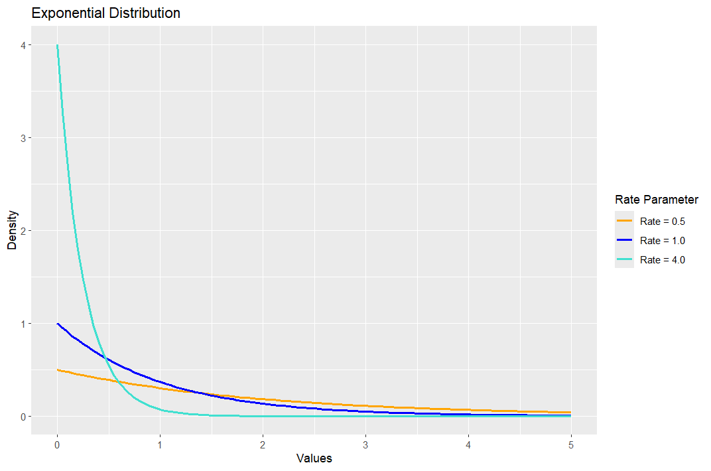
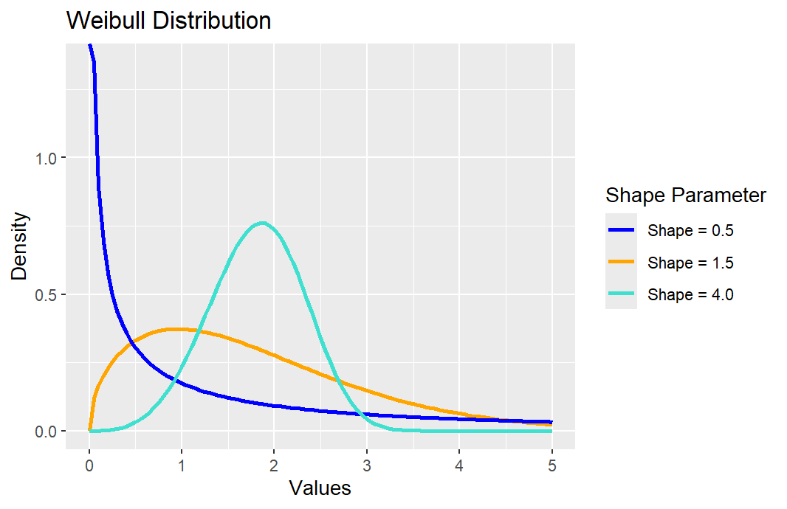
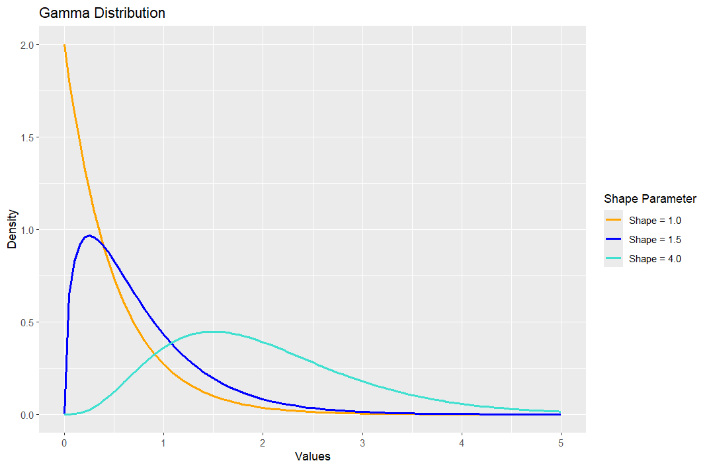
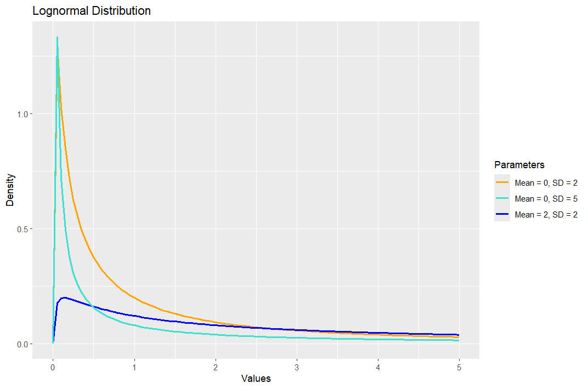
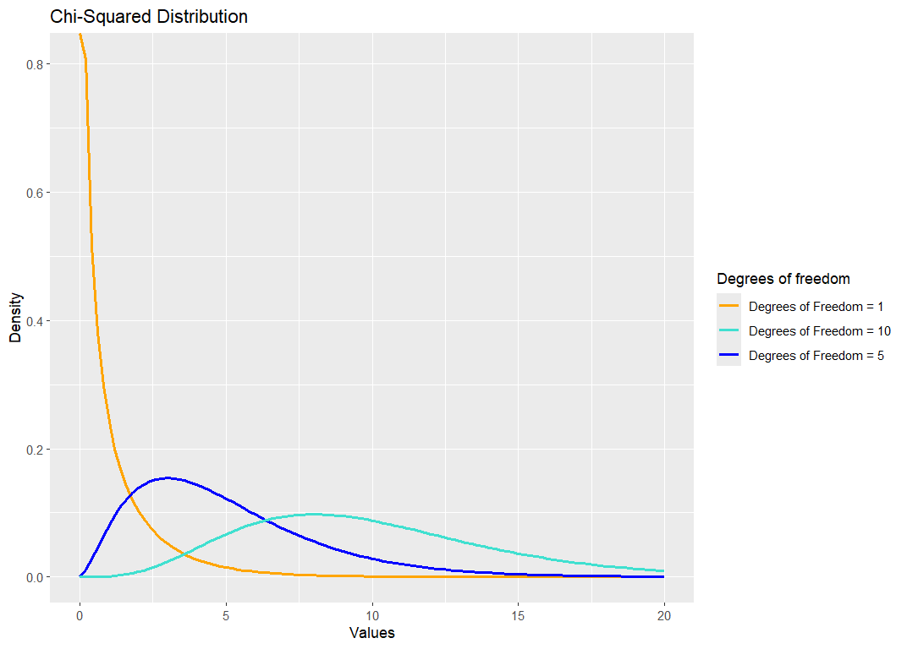
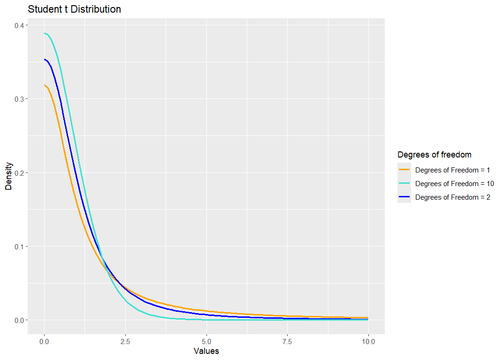
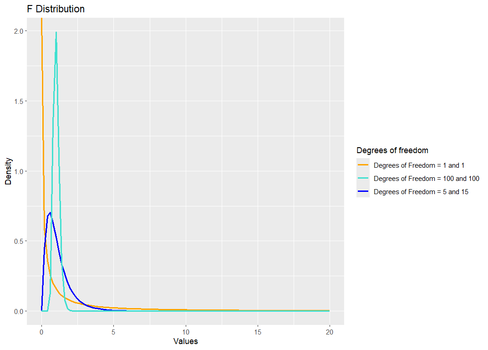

ggplot() +
xlim(0, 5) +
stat_function(fun = dweibull, args = list(shape = 1.5, scale = 2),
aes(color = "Shape = 1.5"), linewidth = 1) +
stat_function(fun = dweibull, args = list(shape = 0.5, scale = 2),
aes(color = "Shape = 0.5"), linewidth = 1) +
stat_function(fun = dweibull, args = list(shape = 4, scale = 2),
aes(color = "Shape = 4.0"), linewidth = 1) +
# Match the exact labels used above to their respective colors
scale_color_manual(values = c("Shape = 1.5" = "orange",
"Shape = 0.5" = "blue",
"Shape = 4.0" = "turquoise")) +
labs(title = "Weibull Distribution",
x = "Values",
y = "Density",
color = "Shape Parameter")Continuous distributions
A random variable \(X\) that can take any value within a given range is said to be a continuous random variable. Unlike discrete random variables, continuous random variables are uncountable.
A continuous random variable \(X\) is described by its probability density function (pdf), \(f, f \geq\) 0 and \(\int^{\infty}_{-\infty}f(x)\ dx\) = 1. Where \(f(x)\) is a pdf, \[ P(a \leq X \leq b) = \int^b_af(x)\ dx, \qquad\text{for} \ a < b. \] Note that for \(a = b, P(X = a) = \int^a_af(x)\ dx\) = 0. This means that the probability that a continuous random variable assumes a certain value is zero. From here it also follows that \[ P(a \leq X \leq b) = P(a < X < b), \] i.e. the probability that \(X\) lies in an interval does not depend on the end points of the interval.
The cumulative distribution function (cdf) is defined as \[ F(x) = P(X \leq x) = \int^x_{-\infty} f(t)\ dt. \] \(F\) is an increasing function: for \(x_1 \leq x_2\), \(F(x_1) \leq F(x_2)\), with F(\(-\infty\)) = 0, F(\(\infty\)) = 1. Further, we have \[\begin{gather*} F'(x) = f(x), \\ \mu = E[X] = \int^{\infty}_{-\infty} x f(x)\ dx,\\ E[g(X)] = \int^{\infty}_{-\infty} g(x) f(x)\ dx,\\ VarX=E(X-E[X])^2=\int^{\infty}_{-\infty} (x-\mu)^2 f(x)\ dx. \end{gather*}\]
As we saw earlier in the course, the \(100p^{\mbox{th}}\) percentile is a number, \(x_p\), such that the area under \(f(x)\) to the left of \(x_p\) is \(p\). That is \[ p = \int_{-\infty}^{x_p} f(x) dx = F(x_p). \] This method can also be used to find the median and inter-quartile range for a given distribution.
We will discuss the following continuous distributions:
- Uniform distribution
- Exponential distribution
- Normal or Gaussian distribution
- Log-normal distribution
- Gamma distribution
- Weibull distribution
- Beta distribution
- \(\chi^2\) distribution
- t-distribution
- F-distribution
Uniform distribution
A continuous random variable \(X\) is uniformly distributed if its density function is given by \[ f(x) = \left\{ \begin{array}{ll} \frac{1}{b-a} \qquad & a \leq x \leq b \\ 0 \qquad & \mbox{otherwise} \end{array} \right. \] The mean and variance of the uniform distribution are \[ \mu = \frac{a+b}{2},\qquad \mbox{and}\qquad \sigma^2=\frac{(b-a)^2}{12}. \] We write \(X \sim\) U(a,b).
Exercise Show that the cumulative distribution function \(F\) is given by \[ F(x) = \left\{ \begin{array}{ll} 0, \qquad & x < a,\\ \frac{x-a}{b-a}, \qquad & a \leq x \leq b,\\ 1,\qquad & x > b. \end{array} \right. \]
Exponential distribution
We have seen that the Poisson distribution is used to examine the number of occurrences of an event over specific time or space interval.The exponential distribution gives a description of the length of the time interval between each occurrence.
(a) Deriving the exponential distribution from the Poisson
Suppose the discrete random variable \(X\) follows the Poisson distribution with \(\lambda\) being the mean number of independent arrivals per time unit. Let \(T\) be the number of time units until the first event happens. We would like to derive the probability of \(T\).
Suppose \(T\) takes the value \(t\), then the mean number of events happening over the time \((0, t)\) is \(\lambda t\). Let \(Y_t\) be the random variable following \(\texttt{Poisson}(\lambda t)\). Then the probability that \(T > t\) equals the probability that \(Y_t = 0\): \[ P(T > t) = P(Y_t = 0) = e^{-\lambda t}. \] The cumulative distribution of \(T\) is \[ F(t) = 1 - P(T > t) = 1 - e^{-\lambda t}. \] The density function is \[ f(t) = F'(t) = \lambda e^{-\lambda t}. \]
Definition: Exponential Distribution
A continuous random variable \(T\) has an exponential distribution if its density function is given by \[ f(t) = \lambda e^{-\lambda t},\qquad t \geq 0,\qquad \lambda >0. \] We write \(T \sim\) (\(\lambda\)).
By solving a few integrations, we have the following relationships.
- \(P(a\leq T\leq b)=\int^b_a\lambda e^{-\lambda t}\ dt=e^{-\lambda a}- e^{-\lambda b}\);
- \(F(t) = P(T \leq t) = \int^t_0 \lambda e^{-\lambda x}\ dx = 1-e^{-\lambda t}\);
- \(f(t) = F'(t) = \lambda e^{-\lambda t}\);
- The median \(M\) is a value for which \(F(M) = 1/2\), so \(M = (\ln 2)/\lambda\);
- The mean \(\mu = \int^{\infty}_0 tf(t)\ dt = \int^{\infty}_0 t \lambda e^{-\lambda t}\ dt = 1/\lambda\);
- The variance \(\sigma^2 = \int^{\infty}_0 (t-\mu)^2f(t)\ dt = 1/\lambda^2\);
(b) Memoryless property
For \(x, y \geq 0\), \[ P(T>x+y|T>x) = \frac{P(T>x+y)}{P(T>x)} = \frac{e^{-\lambda(x+y)}}{e^{-\lambda x}} = e^{-\lambda y} = P(T>y) \] This shows that the exponential distribution has the memoryless property.

Examples:
If we consider events occurring at a constant rate \(\lambda\) (i.e., the mean number of independent arrivals per time unit is \(\lambda\)) and \(T\) is the time until the first event occurs, then T \(\sim\) \(\texttt{exp}(\lambda)\).
We may think of \(T\) as
- Times between calls at a telephone exchange,
- Times between two customers at a post office,
- Times between emissions of unstable radioactive elements,
- Time between two accidents at an intersection,
- Lifetime of some type of instrument, etc.
Example: Disruptions
An industrial plant in England has a mean number of disruptions per week equal to \(\lambda = 0.4\). The number of accidents follows a Poisson distribution. What is the probability that the time between accidents is less than \(2\) weeks?
Solution
Since the number of accidents follows \(\texttt{Poisson}(\lambda)\), then the time \(T\) between two consecutive accidents follows the exponential distribution \(\texttt{exp}(\lambda)\). Then \[ F(T \le 2) = F(2) = 1- e^{-2\lambda} = 1 - e^{-0.8} = 0.5507. \] Thus, the probability of less than \(2\) weeks between accidents is about \(55\%\).
Weibull distributions
For the exponential distribution, the mean number of arrivals per time unit is constant. However, in many real applications, it varies over time. The Weibull distribution allows the mean number of arrivals to be time dependent, \(\lambda(t)\). It is often used to describe the time to failure, where an arrival corresponds to a failure.
Let \(T\) be the time until an event occurs, such as the failure of some mechanical component. We can think of \(T\) as the of that component. The survival function is defined by \[ S(t) = P(T > t) = 1 - F(t), \] where \(S(t)\) is the probability that the component survives beyond the time \(t\).
The (age dependent) rate of failure, also called the hazard function \(\lambda(t)\) of the random variable \(T\), is defined as \[ \lambda(t) = \lim_{dt \rightarrow 0}\frac{P(T \leq t + dt| T > t)}{dt}, \] where \(dt\) is a small interval of time. This can also be thought of as the instantaneous failure rate at \(t\), per unit of time, given that the system has already survived until time \(t\).
The conditional probability in the numerator can be written as the ratio of the joint probability that \(T\) is in the interval \([t, t+dt)\) and \(T > t\) to the probability that \(T > t\): \[ P(T \leq t + dt| T > t) = \frac{P(T \le t +dt, \ T>t) }{P(T > t)} = \frac{P(t \le T \le t +dt) }{P(T > t)} = \frac{f(t)dt}{S(t)}, \] where the last equality applies when \(dt\) is small enough. Therefore, \[ \lambda(t) = \lim_{dt \rightarrow 0}\frac{\frac{f(t)dt}{S(t)}}{dt} = \frac{f(t)}{S(t)}. \] By the definition of the survival function, we have \[ S'(t) = -F'(t) = - f(t). \] Hence, \[ \lambda(t) = \frac{-S'(t)}{S(t)}. \] This is a differential equation with the boundary condition \(S(0) = 1\). Hence \[ S(t) = \exp\left\{ - \int_0^t \lambda(x) dx \right\} \] and \[ f(t) = \lambda(t) S(t) = \lambda(t) \exp\left\{ - \int_0^t \lambda(x) dx \right\}. \]
Special case: If the rate of failure is constant, \(\lambda(t) = \lambda\), then \[ f(t) = \lambda e^{-\lambda t}\ \ \mbox{for} \ \ t \geq 0, \] and \(T \sim\) exp(\(\lambda\)). Assuming that \(\lambda(x)\) is constant means that ageing has no effect and the component fails at random.
The Weibull class of distributions arise from lifetime or reliability models and are applied to reliability theory when ageing is taken into account.
Definition: Weibull Distribution
A random variable \(T\) has a Weibull distribution with parameters \(\lambda\) and \(k\) if its hazard function is of the form \[ \lambda(t) = k\lambda t^{k-1}, \ \ t >0 \ \ \mbox{for}\ \ \ k,\ \lambda>0 \] and in this case, \(T \sim\) Weibull(\(\lambda, k\)).
We have \[\begin{align*} S(t) & = e^{-\int^t_0\lambda(x)\ dx} = e^{-\lambda t^k}, \\ f(t) & = \lambda(t)e^{-\int^t_0\lambda(x)\ dx}\\ & = k\lambda t^{k-1} e^{-\lambda t^k} \text{ for } x \geq 0 \text{and} \lambda, k > 0.\\ \end{align*}\] The mean and the variance of the Weibull distributions are \[ \mu = \lambda^{-1/k}\Gamma(1+1/k); \ \sigma^2 = \lambda^{-2/k}(\Gamma(1+2/k)-\Gamma(1+1/k)^2), \] where \(\Gamma\) is the gamma function: \[\begin{align*} \Gamma(p) & = \int^{\infty}_0 x^{p-1}e^{-x}\ dx \ \mbox{for}\ p>0; \\ \Gamma(p) & = (p-1)\Gamma(p-1)\ \mbox{for all} \ p>1; \Gamma(1) = 1; \Gamma(1/2)=\sqrt{\pi}; \\ \Gamma(n) & = (n-1)! \end{align*}\] For other values of \(n\), the values of \(\Gamma\)-function are given in tables. The graphs of the Weibull pdf for different parameters \(\lambda\) (scaling) and \(k\) (shape value) are shown in the figure. The Weibull distribution has a similar shape and flexibility as the Gamma pdf.

Gamma distribution
Let \(X\) be the waiting time for \(k\) random events to occur where the events are occurring at constant rate \(\lambda\). That is, \(X\) is the sum of \(k\) independent exponentially distributed random variables with parameter \(\lambda\), \(X = \sum^k_{i=1}X_i, X_i\sim exp(\lambda)\), i.i.d. Then the random variable \(X\) follows a Gamma distribution.
Definition: Gamma Distribution
A continuous random variable \(X\) has a Gamma distribution if its density function is given by \[ f(x) = \frac{\lambda^kx^{k-1}e^{-\lambda x}}{\Gamma(k)} \ \mbox{for} \ x\geq0. \] We write \(X \sim \Gamma(\lambda,k)\) (\(k\): shaping parameter; \(\lambda\): scaling parameter).
The graph of the Gamma pdf is shown in the figure.

Where \(k\) is integer, the gamma distribution is also known as the Erlang distribution.
The mean and variance of the gamma distribution are given by \[ E[X] = \frac{k}{\lambda}, \ \mbox{and} \ Var(X) = \frac{k}{\lambda ^2}. \] The easiest way to see this is to represent \(X\) as the sum of \(X_i\) i.i.d. random variables,\(X_i \sim\) exp\((\lambda), i = 1,2,...,k\).
Example: Call Centre
Telephone calls arrive at an office at a mean rate of \(\lambda = 2\) per minute according to a Poisson process. Let \(X\) denote the waiting time in minutes until the fifth call arrives. The pdf of \(X\) with \(k=5\) and \(\lambda = 2\) is \[ f(x) = \frac{2^5x^4}{4!} e^{-2x}, \] and the mean is \(\mu = k/\lambda = 5/2\), the variance is \(\sigma^2 = k/\lambda^2 = 5/4\).
Normal Distribution \(N(\mu,\sigma^2)\)
The importance of the normal distribution comes from the Central Limit Theorem, (CLT)}, a very important theorem that will be covered later. Normal distributions are generally used to model measurement errors, as well as many natural phenomena.
Definition: Normal Distribution
A continuous random variable \(X\) is normally distributed if its probability density function \(f\) is given by \[ f(x) = \frac{1}{\sqrt{2\pi\sigma^2}}e^{-(x-\mu)^2/2\sigma^2} \qquad \mbox{for} \ -\infty < x < \infty. \] We write \(X \sim N(\mu, \sigma^2)\), where \(\mu = EX\) and \(\sigma^2 = Var(X)\).
In the special case when \(\mu = 0\) and \(\sigma^2 = 1\), the distribution is called the standard normal distribution. A random variable with the standard normal distribution is called a standard normal random variable and it is often denoted by \(Z\). If \(Z \sim N(0, 1)\) then \[ \sigma Z+\mu \sim N(\mu, \sigma^2). \] On the other hand, if \(X \sim N(\mu, \sigma^2)\) then \[ Z = \frac{X-\mu}{\sigma} \sim N(0,1). \] The distribution function of the standard normal variable is denoted by \(\Phi\) and its values are given in statistical tables. The cumulative distribution function for a general normal distribution, \(F\), can be obtained from \(\Phi\) via the transformation \[ F(x) = \Phi((x - \mu)/\sigma). \] The values of \(\Phi^{-1}\) give percentage points of the standard normal distribution and are given in statistical tables.
For example, if \(Z \sim N(0, 1)\), then \(P(Z > 1.6449) = 5\%\) and \(P(Z > 1.9600) = 2.5\%\).
That is, \(\Phi^{-1}\)(0.95) = 1.6449 and \(\Phi^{-1}\)(0.975) = 1.9600.
In statistical applications, we are often interested in finding a number \(z_{\alpha}\) such that \[ P(Z \ge z_{\alpha}) = \alpha, \] with \(Z \sim N(0,1)\) and \(\alpha\) is usually less than \(0.5\). That is, \(z_{\alpha}\) is the \(100(1-\alpha)^{\mbox{th}}\) percentile for the standard normal distribution.
Remark: (z-score) The \(X\) is a random variable with \(E[X]=\mu\) and \(E[(X-\mu)^2] = \sigma^2\). Then the \(Z\)-score is defined by \[ Z = \frac{X - \mu}{\sigma}. \] The \(E[Z] = 0\) and \(Var(Z) = Var(X)/\sigma^2 = 1\). But it does not necessarily follow the standard normal distribution.
Normal approximation of binomial distributions
We have seen that the number of successes in a sequence of \(n\) identical, independent trials with the constant probability of success in each trial \(p\), is given by \[ \begin{pmatrix} n \\ k \end{pmatrix}p^k(1-p)^{n-k}. \] These probabilities are tabled but usually not for values \(n > 20\). However if \(np \geq 5\) and \(nq \geq 5\); the binomial distribution can be approximated by the normal distribution. (CLT).
Lognormal distribution
If \(Y \sim N(\mu, \sigma^2)\) then \(X = e^Y\) is said to have a lognormal distribution. The density of \(X\) is \[ f(x) = \frac{1}{\sqrt{2\pi\sigma^2}x}exp\{-(\log (x)-\mu)^2/2\sigma^2\} \ \mbox{for} \ 0<x<\infty. \] The graph of the lognormal distribution is shown in the figure.

One of the main reasons why the normal distribution is more popular than the lognormal lay in the fact that the normal distribution is a symmetric distribution. The hazard function \(\lambda\)(x) of a lognormal increases initially then declines; the lognormal can be useful as a length of service distribution. Noting that \(\mu\) and \(\sigma^2\) are the mean and variance of \(Y\), not \(X\), we have the following statistics for \(X\)
- The mode is \(e^{\mu-\sigma^2}\);
- The median \(M = e^{\mu}\);
- The mean \(E(X) = e^{\mu+ \frac{\sigma^2}{2}}\);
- The variance \(Var(X)= e^{2\mu+\sigma^2}(e^{\sigma^2}-1)\).
Sampling distributions
The \(\chi^2\), \(t\) and \(F\) distributions are known as sampling distributions. They are derived from the normal distribution, and are used when performing hypothesis tests or calculating confidence intervals. For each of these distributions, we will be using the statistical tables of percentage points. The point \(x_\alpha\) such that \[ P(X > x_\alpha) = \alpha \] is known as 100(1 - \(\alpha\))% percentage point of a random variable \(X\).
\(\chi^2\) distribution
Suppose \(Z_1,...,Z_v\) are i.i.d. \(N(0, 1)\), then \(X = Z_1^2 + \cdots + Z_v^2\) is said to have a \(\chi^2_v\) distribution. It can be shown that its probability density function is given with \[ f(x) = \frac{1}{x^{v/2}\Gamma(\frac{v}{2})} x^{\frac{v}{2}-1}e^{-\frac{x}{2}} \ \mbox{for} \ x \geq0, \] where \(\Gamma(\frac{v}{2})\) denotes the Gamma function.
We say that X has a chi-squared distribution with \(v\) degrees of freedom, and we write \(X \sim \chi^2_v\). It can be shown that a \(\chi^2_v\) is the same distribution as a \(\Gamma(1/2,v/2)\). Thus, \(\chi^2\) is a special case of the Gamma distribution.
Example: Exponential and \(\chi^{2}\)-Distributions
If \(X\) has an exponential with a mean of \(2\) (\(\lambda = 1/\mu = 1/2\)), then the pdf of \(X\) is \[ f(x) = \frac 12 e^{-x/2} = \frac{x^{2/2 - 1} e^{-x/2} }{ \Gamma(2/2) 2^{2/2} } \ \sim \ \chi_2^2. \]
The mean of \(\chi_v^2\) equals the number of degree of freedom, and the variance equals twice the number of degree of freedom: \(E[X] = v\) and \(Var(X) = 2v\). A common application of the \(\chi^2\) distribution is in the comparison of expected and observed frequencies, known as goodness of fit. The graph of the \(\chi^2\) probability distribution function is shown in the figure.

The \(100(1-\alpha)^{\mbox{th}}\) percentile (or upper \(100 \alpha^{\mbox{th}}\) percent point) \(\chi^2_{v, \alpha}\) is \[ P(X \ge \chi^2_{v, \alpha} ) = \alpha. \]
Student’s \(t\) distribution
Let \(X\) and \(Y\) are independent random variables and \(X \sim N(0, 1)\), \(Y \sim \chi^2_v\). Then the random variable \[ T = \frac{X}{\sqrt{Y/v}} \] has a \(t\) distribution with \(v\) degrees of freedom. We write \(T \sim t_v\).
The density of \(T\) is given as $$ f(x) = (1+)^{-(v+1)/2} -< x < ] The \(t_v\) distribution is symmetric and in its shape it is similar to the \(N(0, 1)\), but with longer tails. As \(v\rightarrow \infty\), \(t_v\rightarrow N(0, 1)\). The graph of the \(t\)-probability density function is shown in the figure.

F distribution
The \(F\) distribution is used to compare variances.
If \(X\) and \(Y\) are independent random variables with \(X\sim\chi^2_{\alpha}\) and \(Y\sim \chi^2_{\beta}\), then \[ T = \frac{X/\alpha}{Y/\beta} \] is said to have an \(F_{\alpha, \beta}\) distribution.
We write \(T \sim F_{\alpha, \beta}\). The density function of T is given as \[ f(x) = \frac{\Gamma((\alpha+\beta)/2)}{\Gamma(\alpha/2)\Gamma(\beta/2)}\left(\frac{\alpha}{\beta}\right)^ {\alpha/2}x^{(\alpha/2)-1}\left(1+\frac{\alpha}{\beta}x\right)^{-(\alpha+\beta)/2}, \ \mbox{for} \ x>0. \] The graph of the \(F\) pdf is shown in the figure.

Distribution of mixed type
So far, we have considered random variables that are either discrete or continuous. However, on some occasions, combinations of the two types of random variables are also encountered. That is, in some experiments, positive probability is assigned to each of certain points and also spread over an interval of outcomes.
Example: Mixed Distribution
A fair coin is tossed. If it is Head, the player receives \(\£ 2\). If it is Tail, the player spins a balanced spinner that has a scale from \(0\) to \(1\). Then the player receives that fraction of a pound associated with the point selected by the spinner. If \(X\) denotes the amount received, what is the probability function of \(X\).
Solution
There is \(1/2\) chance for \(x=2\); and the other \(1/2\) chance that the player is going to spin the spinner, which is uniformally distributed over \([0, 1]\). Hence the pdf is \[ p(x) = \left\{ \begin{array}{ll} 0 & \ \mbox{when} \ x < 0 \\ 1/2 & \ \mbox{when} \ 0\le x \le 1 \\ 0 & \ \mbox{when} \ 1 < x < 2 \\ 1/2 & \ \mbox{when} \ x= 2 \\ 0 & \ \mbox{when} \ x > 2 \end{array} \right . \] Its cdf is \[ F(x) = \left\{ \begin{array}{ll} 0 & \mbox{for} \ x < 0 \\ \frac{x}2 & \mbox{for} \ 0 \le x \le 1 \\ \frac 12 & \mbox{for} \ 1 < x < 2 \\ 1 & \mbox{for} \ x \ge 2. \\ \end{array} \right . \] The mean is \[ \mu = E[X] = \int_0^1 x/2 dx + 2 \times \frac 12 = \frac 14 + 1 = \frac 54. \] The variance is \[ \sigma^2 = E[X^2] - \mu^2 = \int_0^1 x^2/2 dx + 2^2 \frac 12 - (5/4)^2 = \frac{29}{48}. \]
R Code for Producing Plots
The R code for producing each of the plots follows a similar pattern. Below we include the code for generating the Weibull curves.
For the other probability distributions, R uses the function commands and parameters given in the table below.
| Distribution | Name in R | Parameters | ||
|---|---|---|---|---|
| Weibull | dweibull | shape, scale | ||
| Exponential | dexp | rate | ||
| Gamma | dgamma | shape, rate | ||
| Lognormal | dlnorm | meanlog, sdlog | ||
| \(\chi^{2}\) | dchisq | df | ||
| Student t | dt | df | ||
| F | df (but safer to use stat::df) | df1, df2 |